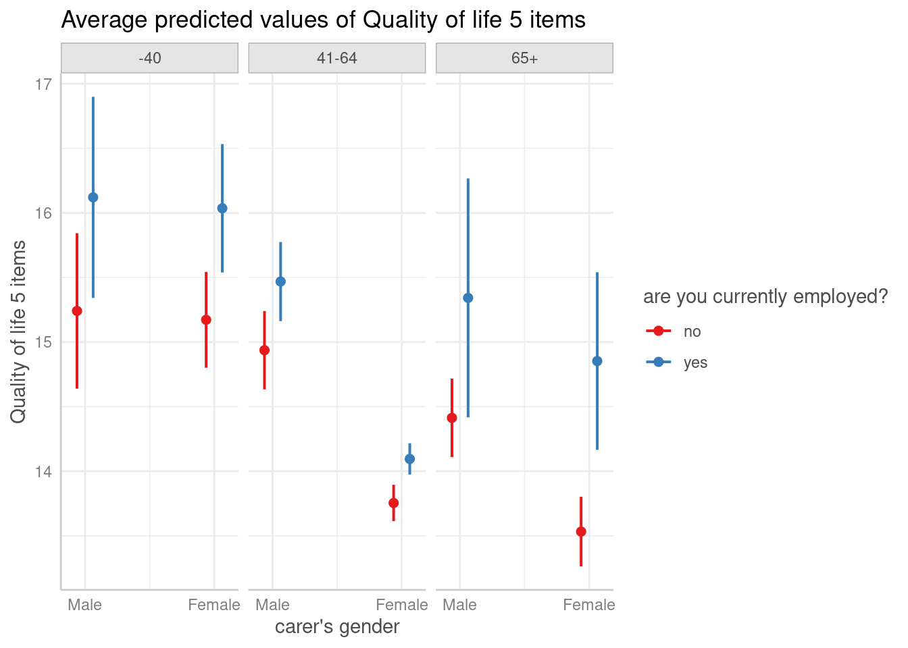

Case Study: Intersectionality analysis using the MAIHDA framework
Daniel Lüdecke
2024-02-18
Source:vignettes/practical_intersectionality.Rmd
practical_intersectionality.RmdThis vignette demonstrate how to use ggeffects in the context of an intersectional multilevel analysis of individual heterogeneity, using the MAIHDA framework. The general approach of the MAIHDA framework is described in Axelsson Fisk et al. 2018.
Intersectionality analysis is a new approach in social epidemiology, which attempts to move away from looking at relevant social indicators in isolation.
“The advantage of incorporating an intersectional framework in social epidemiology is that it goes beyond the unidimensional study of socioeconomic and demographic categorizations by considering the effect of belonging to specific strata simultaneously defined by multiple social, economic and demographic dimensions.”
The steps we are showing here are:
Defining the intersectional strata.
Fitting a multilevel model to see whether intersectional strata contribute to between-stratum variance (which can be considered as “inequalities”, whether social or health related).
Fitting partially adjusted multilevel models and calculating proportional change in the between-stratum variance (PCVs) to quantify to what degree the different intersectional dimensions contribute to the between-stratum variance (inequalities).
Calculate adjusted predictions (estimated marginal means) of the outcome by intersectional strata, to get a clearer picture of the variation between intersectional dimensions, as well as testing specific strata for significant differences.
1. Prepating the data and defining intersectional strata
First, we load the required packages and prepare a sample data set.
We use the efc data from the ggeffects
package, which contains data of family carers who care for their elderly
relatives. Our outcome of interest is quality of life of family
carers (score ranging from 0 to 25 points), the different dimensions of
the intersectionality groups are gender (male/female),
employment status (currently employed yes/no) and age
(three groups: until 40, 41 to 64 and 65 or older). We assume that there
might be health-related inequalities, i.e. the quality of life differs
depending on the characteristics that define our intersectional
strata.
library(ggeffects) # predictions and significance testing
library(insight) # extracting random effects variances
library(datawizard) # data wrangling and preparation
library(parameters) # model summaries
library(performance) # model fit indices, ICC
library(glmmTMB) # multilevel modelling
# sample data set
data(efc, package = "ggeffects")
efc <- efc |>
# numeric to factors, set labels as levels
to_factor(select = c("c161sex", "c172code", "c175empl")) |>
# recode age into three groups
recode_values(
select = "c160age",
recode = list(`1` = "min:40", `2` = 41:64, `3` = "65:max")
) |>
# rename variables
data_rename(
pattern = c("c161sex", "c160age", "quol_5", "c175empl"),
replacement = c("gender", "age", "qol", "employed")
) |>
# age into factor, set levels, and change labels for education
data_modify(age = factor(age, labels = c("-40", "41-64", "65+")))To include the intersectional strata variables gender,
employed and age in our mixed model, we will
define them as interacting random effects (excluding main effects of
interactions): (1 | gender:employed:age) (see also below).
The idea is to have truly unique combinations in our model, similar as
if we would create a factor variable with all combinations manually:
efc$strata <- ifelse(
is.na(efc$employed) | is.na(efc$gender) | is.na(efc$age),
NA_character_,
paste0(efc$gender, ", ", efc$employed, ", ", efc$age)
)
efc$strata <- factor(efc$strata)
data_tabulate(efc$strata)
#> efc$strata <categorical>
#> # total N=908 valid N=900
#>
#> Value | N | Raw % | Valid % | Cumulative %
#> -------------------+-----+-------+---------+-------------
#> Female, no, -40 | 37 | 4.07 | 4.11 | 4.11
#> Female, no, 41-64 | 238 | 26.21 | 26.44 | 30.56
#> Female, no, 65+ | 135 | 14.87 | 15.00 | 45.56
#> Female, yes, -40 | 63 | 6.94 | 7.00 | 52.56
#> Female, yes, 41-64 | 210 | 23.13 | 23.33 | 75.89
#> Female, yes, 65+ | 3 | 0.33 | 0.33 | 76.22
#> Male, no, -40 | 15 | 1.65 | 1.67 | 77.89
#> Male, no, 41-64 | 42 | 4.63 | 4.67 | 82.56
#> Male, no, 65+ | 50 | 5.51 | 5.56 | 88.11
#> Male, yes, -40 | 34 | 3.74 | 3.78 | 91.89
#> Male, yes, 41-64 | 70 | 7.71 | 7.78 | 99.67
#> Male, yes, 65+ | 3 | 0.33 | 0.33 | 100.00
#> <NA> | 8 | 0.88 | <NA> | <NA>We now have the choice and could either use the strata
variable as group factor for our random effects, or
gender:employed:age. For plotting predictions (see section
4), we get clearer plots when we include the three factors
gender, employed and age instead
of the integrated strata factor.
2. Fitting the simple intersectional model
Intersectionality analysis aims at recognizing effects of belonging to specific strata simultaneously. In the context of the MAIHDA framework, the interest lies in analysing the variation between strata regarding the outcome of interest. Thus, the indicators that define the intersectional dimensions are used as interacting random effects (group factors) in a multilevel model (random-intercept model).
We start by fitting a linear mixed effects model, which includes no
fixed effects, but only our different intersectional dimensions:
gender, employed and age.
# Quality of Life score ranges from 0 to 25
m_null <- glmmTMB(qol ~ 1 + (1 | gender:employed:age), data = efc)
# the above model is identical to:
# m_null <- glmmTMB(qol ~ 1 + (1 | strata), data = efc)The purpose of this model is to quantify the “discriminatory
accuracy”, which is achieved by calculating the ICC (see performance::icc())
of this model. The higher the ICC, the greater the degree of similarity
within the strata (regarding quality of life) and the greater
the difference in quality of life between the intersectional
strata. I.e., the higher the ICC, the better the model is at
discriminating individuals with higher or lower quality of life score,
as opposed to models with lower ICC.
We now look at the model parameters and the ICC of our simple intersectional model.
model_parameters(m_null)
#> # Fixed Effects
#>
#> Parameter | Coefficient | SE | 95% CI | z | p
#> ------------------------------------------------------------------
#> (Intercept) | 14.91 | 0.40 | [14.13, 15.70] | 37.41 | < .001
#>
#> # Random Effects
#>
#> Parameter | Coefficient | 95% CI
#> ----------------------------------------------------------------
#> SD (Intercept: gender:employed:age) | 1.03 | [0.56, 1.89]
#> SD (Residual) | 5.23 | [4.99, 5.48]
icc(m_null)
#> # Intraclass Correlation Coefficient
#>
#> Adjusted ICC: 0.038
#> Unadjusted ICC: 0.038The ICC with a value of about 4% is rather low. Usually, this indiates that our dimensions used to define the intersectional strata do not suggest larger social inequalities regarding quality of life. But we ignore this fact for now, as the purpose of demonstrating the analysis approach is rarely affected.
3. Partially-adjusted intersectional model and PCV
In the next step we want to find out, which intersectional dimension
contributes most to possible inequalities, i.e. which of our group
factors gender, employed and age
explains most of the between-stratum variance of the random effects.
This is achieved by fitting partially-adjusted intersectional
models.
“The purpose of the partially adjusted model was to quantify to what degree the different dimensions used to construct the intersectional strata contributed to the between stratum variance seen in the previous model.”
For each of the intersectional dimensions, a multilevel model including this dimension as fixed effect is fitted. We can then both look at the ICCs of the partially-adjusted models, as well as at the proportional change in the between-stratum variance, the so-called PCV coefficients.
First, we fit three models each with one dimension as predictor.
m_gender <- glmmTMB(qol ~ gender + (1 | gender:employed:age), data = efc)
m_employment <- glmmTMB(qol ~ employed + (1 | gender:employed:age), data = efc)
m_age <- glmmTMB(qol ~ age + (1 | gender:employed:age), data = efc)The regression coefficients already give an impression how strong the association between each single dimension and the outcome is, taking between-stratum variance into accout. The larger (in absolute values) the coefficients, the higher the degree that dimension contributed to the between-stratum variance.
compare_parameters(m_gender, m_employment, m_age)
#> Parameter | m_gender | m_employment | m_age
#> ------------------------------------------------------------------------------------
#> (Intercept) | 15.55 (14.51, 16.60) | 14.23 (13.35, 15.12) | 16.25 (15.33, 17.17)
#> gender (Female) | -1.18 (-2.54, 0.17) | |
#> employed (yes) | | 1.38 ( 0.07, 2.68) |
#> age (41-64) | | | -1.99 (-3.14, -0.84)
#> age (65+) | | | -2.55 (-3.88, -1.23)
#> ------------------------------------------------------------------------------------
#> Observations | 895 | 895 | 895Looking at the summary tables above, it seems like
gender is the dimension that explains least of the
between-stratum variance, i.e. gender seems to be the characteristic
that contributes least to potential social inequalities.
age, in turn, seems to be the most important characteristic
regarding inequalities.
Since the fixed effects now take away some of the proportion of the variance explained by the grouping factors (random effects), we expect the ICC for the above models to be lower.
icc(m_gender)$ICC_adjusted
#> [1] 0.0258391
icc(m_employment)$ICC_adjusted
#> [1] 0.02341415
icc(m_age)$ICC_adjusted
#> [1] 0.004619145Indeed, the ICC correlates with the fixed effects coefficients, i.e. the larger the coefficient (in absolute values), the lower the ICC.
Next, we want to quantify the degree the different dimensions contribute to the variance between groups more accurately. To do so, we calculate the proportional change in between-stratum variance, or PCV. This coefficient explains how much of the total proportion of explained variance by the strata can be explained by a single dimension that define those strata. The PCV ranges from 0 to 1, and the closer to 1, the more this particular dimension explains social inequalities.
# extract random effect variances from all models
v_null <- get_variance(m_null)
v_gender <- get_variance(m_gender)
v_employment <- get_variance(m_employment)
v_age <- get_variance(m_age)
# PCV (proportional change in between-stratum variance)
# from null-model to gender-model
(v_null$var.random - v_gender$var.random) / v_null$var.random
#> [1] 0.3202532
# PCV from null-model to employment-model
(v_null$var.random - v_employment$var.random) / v_null$var.random
#> [1] 0.3859362
# PCV from null-model to age-model
(v_null$var.random - v_age$var.random) / v_null$var.random
#> [1] 0.8809464Again, we see that the PCV is in line with the models’ ICC’s and
regression coefficients. We see the highest proportional change for
age, meaning that - although gender and education can
contribute to inequalities - age is the most relevant predictor.
4. Predict between-stratum variance and test for significant differences
Finally, we may want to have a clearer picture of how the different strata vary, which combination of characteristics defines the highest or maybe lowest risk group. To do so, we calculate adjusted predictions of the random effects.
The following code shows the predicted average quality of life scores for the different groups.
predictions <- ggpredict(
m_null,
c("gender", "employed", "age"),
type = "random",
ci_level = NA
)
plot(predictions)
According to these results, employed male family carers, who are not older than 40 years, show on average the highest quality of life. On the other hand, unemployed female carers aged 65 or older have the lowest quality of life.
We can now calculate pairwise comparisons that show which differences between groups are statistically significant. Since all combinations of pairwise comparisons would return 66 rows in total, we just show the first ten rows for demonstrating purpose.
hypothesis_test(predictions)[1:10, ]
#> # Pairwise comparisons
#>
#> gender | employed | age | Contrast | 95% CI | p
#> ---------------------------------------------------------------------
#> Male-Female | no-no | -40--40 | 0.07 | -0.16, 0.30 | 0.565
#> Male-Male | no-yes | -40--40 | -0.88 | -1.25, -0.50 | < .001
#> Male-Female | no-yes | -40--40 | -0.79 | -1.07, -0.52 | < .001
#> Male-Male | no-no | -40-41-64 | 0.30 | -0.04, 0.64 | 0.080
#> Male-Female | no-no | -40-41-64 | 1.49 | 0.86, 2.12 | < .001
#> Male-Male | no-yes | -40-41-64 | -0.23 | -0.53, 0.08 | 0.147
#> Male-Female | no-yes | -40-41-64 | 1.15 | 0.54, 1.75 | < .001
#> Male-Male | no-no | -40-65+ | 0.83 | 0.27, 1.38 | 0.004
#> Male-Female | no-no | -40-65+ | 1.71 | 1.01, 2.41 | < .001
#> Male-Male | no-yes | -40-65+ | -0.10 | -0.43, 0.23 | 0.549We can extract specific comparisons by looking for the related row number in the above output. E.g., if we want to compare employed male carers at the age of 40 or younger with employed female carers of the same age group, this is in row 22:
hypothesis_test(predictions)[22, ]
#> # Pairwise comparisons
#>
#> gender | employed | age | Contrast | 95% CI | p
#> -----------------------------------------------------------------
#> Male-Female | yes-yes | -40--40 | 0.08 | -0.20, 0.37 | 0.557An alternative way to extract specific comparisons is using the
test argument (for details, please see this vignette). Therefor, we need
to know the index (row number) of these two estimated predictions, which
we can read from the output when we set test = NULL:
hypothesis_test(predictions, test = NULL)
#> gender | employed | age | Predicted | 95% CI | p
#> -------------------------------------------------------------
#> Male | no | -40 | 15.24 | 14.64, 15.84 | < .001
#> Female | no | -40 | 15.17 | 14.80, 15.54 | < .001
#> Male | yes | -40 | 16.12 | 15.34, 16.90 | < .001
#> Female | yes | -40 | 16.04 | 15.54, 16.53 | < .001
#> Male | no | 41-64 | 14.94 | 14.63, 15.24 | < .001
#> Female | no | 41-64 | 13.75 | 13.61, 13.90 | < .001
#> Male | yes | 41-64 | 15.47 | 15.16, 15.77 | < .001
#> Female | yes | 41-64 | 14.10 | 13.97, 14.22 | < .001
#> Male | no | 65+ | 14.41 | 14.11, 14.72 | < .001
#> Female | no | 65+ | 13.53 | 13.26, 13.80 | < .001
#> Male | yes | 65+ | 15.34 | 14.42, 16.27 | < .001
#> Female | yes | 65+ | 14.85 | 14.17, 15.54 | < .001Employed male carers at the age of 40 or younger is the third row,
b3. Their female counterpart is in row 4, b4.
Now we want to test whether these two are equal,
i.e. test = "b3 = b4".
hypothesis_test(predictions, test = "b3 = b4")
#> Hypothesis | Contrast | 95% CI | p
#> -------------------------------------------
#> b3=b4 | 0.08 | -0.20, 0.37 | 0.557
#>
#> Tested hypothesis: gender[Male],employed[yes],age[-40] =
#> gender[Female],employed[yes],age[-40]As expected, the result is identical.
Finally, if we only want to modulate one factor and compare those
groups within the levels of the other groups, we can use the
by argument. This reduces the output and only compares the
focal term(s) within the levels of the remaining predictors.
# Compare levels of gender and employed for age groups
hypothesis_test(predictions, by = "age")
#> # Pairwise comparisons
#>
#> gender | employed | age | Contrast | 95% CI | p
#> -------------------------------------------------------------------
#> Male-Female | no-no | -40 | 0.07 | -0.16, 0.30 | 0.565
#> Male-Male | no-yes | -40 | -0.88 | -1.25, -0.50 | < .001
#> Male-Female | no-yes | -40 | -0.79 | -1.07, -0.52 | < .001
#> Female-Male | no-yes | -40 | -0.95 | -1.45, -0.44 | < .001
#> Female-Female | no-yes | -40 | -0.86 | -1.12, -0.60 | < .001
#> Male-Female | yes-yes | -40 | 0.08 | -0.20, 0.37 | 0.557
#> Male-Female | no-no | 41-64 | 1.18 | 0.89, 1.48 | < .001
#> Male-Male | no-yes | 41-64 | -0.53 | -0.70, -0.36 | < .001
#> Male-Female | no-yes | 41-64 | 0.84 | 0.57, 1.11 | < .001
#> Female-Male | no-yes | 41-64 | -1.71 | -2.09, -1.34 | < .001
#> Female-Female | no-yes | 41-64 | -0.34 | -0.37, -0.31 | < .001
#> Male-Female | yes-yes | 41-64 | 1.37 | 1.03, 1.71 | < .001
#> Male-Female | no-no | 65+ | 0.88 | 0.71, 1.05 | < .001
#> Male-Male | no-yes | 65+ | -0.93 | -1.81, -0.05 | 0.039
#> Male-Female | no-yes | 65+ | -0.44 | -0.92, 0.04 | 0.074
#> Female-Male | no-yes | 65+ | -1.81 | -2.84, -0.78 | < .001
#> Female-Female | no-yes | 65+ | -1.32 | -1.97, -0.67 | < .001
#> Male-Female | yes-yes | 65+ | 0.49 | -0.04, 1.02 | 0.071
# Compare levels of gender for employed and age groups
hypothesis_test(predictions, by = c("employed", "age"))
#> # Pairwise comparisons
#>
#> gender | employed | age | Contrast | 95% CI | p
#> ----------------------------------------------------------------
#> Male-Female | no | -40 | 0.07 | -0.16, 0.30 | 0.565
#> Male-Female | yes | -40 | 0.08 | -0.20, 0.37 | 0.557
#> Male-Female | no | 41-64 | 1.18 | 0.89, 1.48 | < .001
#> Male-Female | yes | 41-64 | 1.37 | 1.03, 1.71 | < .001
#> Male-Female | no | 65+ | 0.88 | 0.71, 1.05 | < .001
#> Male-Female | yes | 65+ | 0.49 | -0.04, 1.02 | 0.0715. Conclusion
Intersectional multilevel analysis of individual heterogeneity, using the MAIHDA framework, is a new approach in social epidemiology, which helps to understand the interaction of social indicators with regard to social inequalities.
This approach requires the application of multilevel models, where ICC and PCV are relevant coefficients. The ggeffects package allows to go beyond quantifying to what degree different intersectional dimensions contribute to inequalities by predicting the average outcome by group, thereby explicitly showing the differences between those groups (strata).
Furthermore, with ggeffects it is possible to compare differences between groups and test whether these differences are statistically significant or not, i.e. whether we find “evidence” for social inequalities in our data for certain groups (at risk).
References
- Axelsson Fisk S, Mulinari S, Wemrell M, Leckie G, Perez Vicente R, Merlo J. Chronic Obstructive Pulmonary Disease in Sweden: An intersectional multilevel analysis of individual heterogeneity and discriminatory accuracy. SSM - Population Health (2018) 4:334-346. doi: 10.1016/j.ssmph.2018.03.005